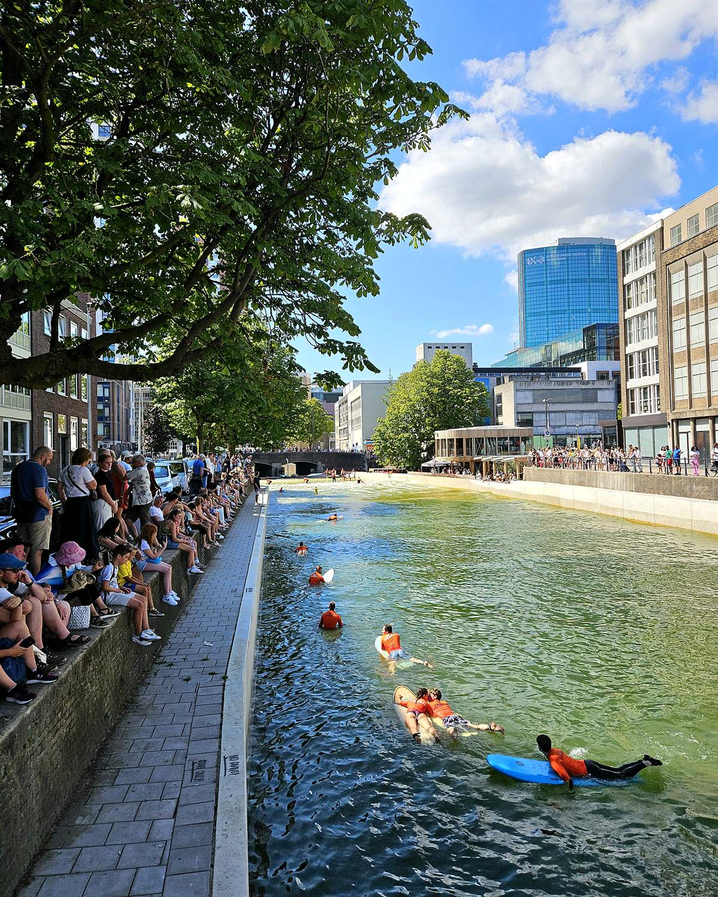

Surfen achter de Markthal — RiF010

Iedereen zei: surfen in het centrum van Rotterdam, dat gaat nooit lukken. Nou, ga maar eens kijken achter de Markthal.
RiF010 is voor ons vooral een relaxpunt geworden. Of je nu elk weekend in de stad bent zoals wij, of maar één keer voor een stedentrip: dit is gewoon een toffe plek. Wat wij vaak doen: we lopen via de Markthal — voor wie niet uit Rotterdam komt sowieso leuk, maar ook voor Rotterdammers die er lang niet geweest zijn blijft dat een toffe binnenkomer. De kids halen er een bubble tea of een hapje, dat nemen we mee naar buiten. En dan het trucje: loop de Markthal uit aan de andere kant dan de zaterdagmarkt, ga meteen rechtsaf, en je loopt zo tegen de golven aan.
Even een stukje geschiedenis, want dat maakt deze plek voor mij extra bijzonder. Rotterdam had een tijdje het Stadsinitiatief: Rotterdammers stemden zelf welk plan er geld kreeg om de stad mooier te maken. De allereerste winnaar was de Luchtsingel — die gele brug bij het Hofplein, opgebouwd uit planken met namen erop. Onze naam staat er ook ergens op. Twee jaar later, in 2014, won RiF010: een surfbad midden in de Steigersgracht. Vervolgens duurde het nog tien jaar voordat de eerste golf er rolde — niet alles gaat makkelijk in deze stad. Maar uiteindelijk staat die brug er, en ligt er nu een surfparadijs midden in het centrum. Rotterdam is er de eerste stad ter wereld mee. Geen woorden maar daden, daar staat deze stad voor wat mij betreft.
En het mooie is: je hoeft er helemaal niks voor te doen. Ga lekker zitten, met of zonder drankje, en kijk. Naar mensen die voor het eerst op een plank staan en er binnen twee tellen weer afdonderen, of naar de gevorderden die echt over de golven gaan — allebei even tof om te zien. En dan kijk je even omhoog en besef je waar je zit: midden in een urban jungle, met om je heen alleen maar de grote gebouwen van Rotterdam. Golven onder je, hoogbouw boven je. Nergens anders zie je dat.
Zeker in de lente en zomer is dit een heerlijke tussenstop. Je zit er een kwartiertje, twintig minuten, maakt een fotootje en loopt weer verder de stad in. Met kinderen werkt het perfect: bubble tea erbij, surfers kijken, klaar.
Eerlijk is eerlijk: zelf heb ik er nog niet gesurft, dus die ervaring kan ik nog niet delen. Staat zeker op mijn Rotterdam-to-dolijstje. Heb jij het al wel gedaan? Laat weten wat je ervan vond. 💚
Praktisch
RiF010, in de Steigersgracht achter de Markthal (centrum). Loop de Markthal uit aan de andere kant dan de zaterdagmarkt en ga meteen rechtsaf. Kijken is gratis en kan gewoon vanaf de kade; in de lente en zomer op z’n mooist.